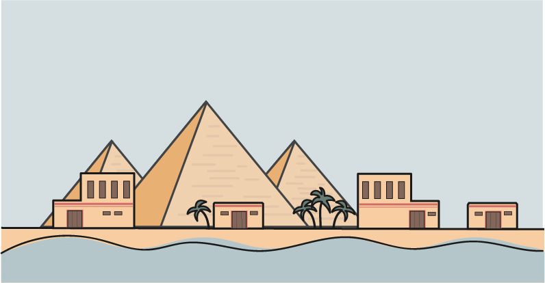

NIJLDELTA TIJDLIJN
DE ONTWIKKELING LANGS DE NIJL

Ongeveer rond 6.000 voor Christus was de Nijl vallei voor het eerst bewoond. De Nijl ligt in de droge Sahara, de rivier zorgt voor water maar zorgt er ook voor dat er mensen langs de rivier kunnen wonen. Want met een natte ondergrond konden zij voedsel verbouwen. Vooral omdat de Nijl één keer per jaar overstroomd.
6000 v.Chr.

1893

1905

1908

1915

1916

1919

1920

1922

1923

1934